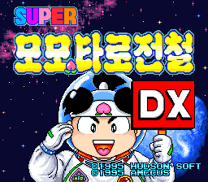
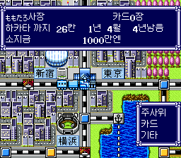
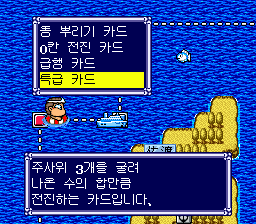
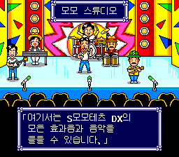
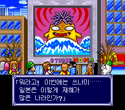

메뉴 표시 수정
개발 기록직함 표기를 두 글자로 정리했습니다.
‘외계인’은 ‘성인’, ‘부함장’은 ‘부관’으로 변경했습니다. 직함 선택창의 폭을 원래대로 복원하고, 세 글자 대응을 위해 추가했던 코드를 제거했습니다.
목적지를 향해 주사위를 굴리고,
전국의 물건을 사들이는 철도 여행.
익숙한 게임을 우리말로 만나보세요.
비공식 팬 번역 · 패치 파일 공개 준비 중

PATCH RELEASE
배포 파일과 버전이 확정되면 이곳에서 받을 수 있습니다.
현재는 다운로드 파일을 제공하지 않습니다.
원본 ROM은 제공하지 않습니다.
IN-GAME PREVIEW

남은 거리와 기간, 소지금을 한눈에.

카드 이름부터 효과 설명까지 우리말로.

게임 속 음악과 효과음을 즐기는 공간.

여행 중 만나는 이야기들도 한글로.
개발 중 촬영한 화면입니다. 최종 배포본의 내용은 달라질 수 있습니다.
GETTING STARTED
패치 공개 후, 배포본에 맞는 도구와 상세 적용 방법을 함께 안내합니다.
패치가 지정하는 일본판 원본을 준비합니다. 버전과 체크섬을 먼저 확인하세요.
원본을 백업하고, 배포 안내에 명시된 도구로 패치 파일을 적용합니다.
패치된 파일을 실행해 한글 표시를 확인합니다. 저장 데이터 관련 주의사항도 함께 확인하세요.
아니요. 이 사이트에는 한글 패치만 배포할 예정이며, 원본 게임 파일은 포함하지 않습니다.
아직 배포본의 호환 안내가 확정되지 않았습니다. 기존 저장 파일은 별도로 백업하고, 공개 시 제공되는 안내를 확인해 주세요.
패치 공개 시 제보 방법을 함께 안내합니다. 문제가 생긴 화면, 사용한 패치 버전, 재현 과정을 남겨 주시면 확인에 도움이 됩니다.
SOURCE ROM CHECKSUM
패치 적용 전, 원본 일본판 파일의 해시가 아래 값과 일치하는지 확인하세요. 파일명이 같아도 내용은 다를 수 있습니다.
99ef68651d292a8bc57fe4f9d8080d76a46d7f5ae3d498a1278ee81894d70e77ad9b1606dad5c75f418ca79304720de8개발에 사용한 원본 파일에서 직접 계산한 값입니다. 원본 ROM은 제공하지 않습니다.
PROJECT NOTES
‘외계인’은 ‘성인’, ‘부함장’은 ‘부관’으로 변경했습니다. 직함 선택창의 폭을 원래대로 복원하고, 세 글자 대응을 위해 추가했던 코드를 제거했습니다.
현재 번역 카탈로그 2,351개 항목을 원문·번역문·검토 상태와 함께 정리했습니다.